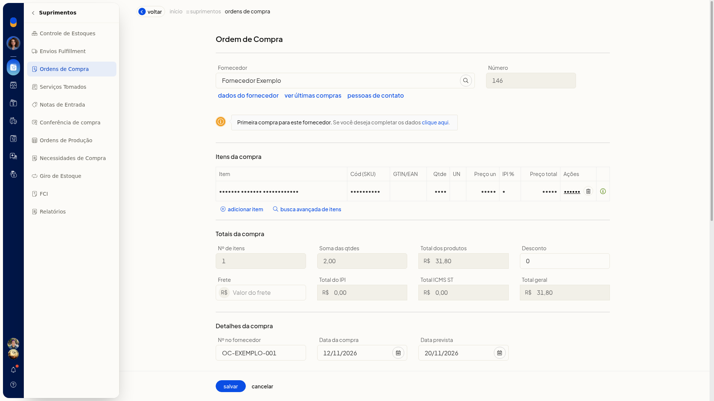
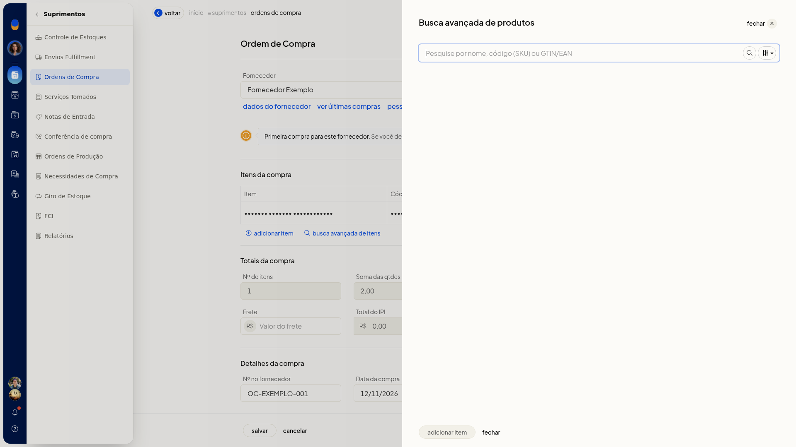

Ordens de compra
No ERP da Olist, a ordem de compra registra o pedido ao fornecedor, com datas, condição, transporte, marcadores e itens. Você consulta as ordens por busca, período, filtros e situação, inclui uma ordem pela tela ou inicia a importação por planilha em Suprimentos > Ordens de Compra.
Importante
- Para lançar a ordem pela tela, informe um fornecedor e ao menos um item.
- A planilha de importação precisa seguir o layout indicado na tela: Excel.xls,.xlsx ou CSV, com no máximo 2 Mb.
Instruções
Pela tela
- Acesse Suprimentos > Ordens de Compra.
- Na lista, use a busca, o filtro por período e os demais filtros. As abas são Todos, Em aberto, Em andamento, Atendidas e Canceladas.
- Clique em Incluir ordem de compra.
- Informe o Fornecedor. Se o nome não estiver cadastrado, a tela avisa que o cadastro não foi encontrado e indica primeira compra.
- Preencha os dados da ordem.
Dados da ordem
- Nº no fornecedor
- Data compra, no formato DD/MM/AAAA
- Data prevista, no formato DD/MM/AAAA
- Condição
- Categoria
- Transportador
- Frete
- Observações
- Marcadores
-
No item, informe o produto, o Código (SKU), a Quantidade em decimal com vírgula e o Preço unitário em decimal com vírgula. A linha e o total da ordem são recalculados na tela.

-
Para localizar o produto, abra a busca avançada, pesquise por nome, código (SKU) ou GTIN/EAN e filtre. Clique em Adicionar item para incluir, ou em Fechar para sair sem incluir.

-
Revise os totais da ordem.
Por planilha
- Acesse Suprimentos > Ordens de Compra.
- Abra Mais ações.
- Clique em Importar ordens de compra de uma planilha.
- Use um arquivo Excel.xls,.xlsx ou CSV, no layout do Olist ERP, com no máximo 2 Mb.
- Monte a planilha com as colunas indicadas na tela:
- ID
- Data
- ID contato
- Nome do contato
- Desconto
- Observações
- Situação
- ID produto
- Descrição
- Quantidade
- Valor unitário
- Número da ordem de compra
- Código (SKU)
- Clique em Carregar arquivo para enviar a planilha. Para voltar sem enviar, clique em Cancelar.
Resultado
A lista exibe as ordens nas abas de situação, com as colunas Número, Data, Previsto, Fornecedor, Total, Marcadores e Integrações. No formulário, o total da linha e o total da ordem aparecem enquanto o item é preenchido.
Informações adicionais
Impressão e exportação na lista
Em Mais ações, a lista também oferece Imprimir relatório e Exportar ordens de compra para planilha. A própria lista tem o botão Imprimir.